Does a perceived lack of control push people to the breaking point of supporting politically motivated violence?
Background
Politically motivated attacks have become a norm in the United States. Evidence points to the recent U.S. Capitol riot and mass shootings at schools and religious institutions. It is important to understand why there is a growing tendency to resort to extreme violent acts within politics if the U.S. is to retain its democratic roots. By identifying why people support political violence, we can better develop solutions from preventing it in the future.
Challenge
Recent research reported a number of motivations for violent sentiments, such as affective polarization, partisan strength, violent rhetoric from elites, and increased disagreement of policy beliefs. However, these findings tend to omit a large portion of the population who are not politically interested or are apolitical altogether. This means that the majority of the U.S. public is not included in these analyses. To account for the portion of the public that does not subscribe to the left-right political dynamic, it is important to investigate underlying psychological causes that affect all members of the population.
Humans have a fundamental need to feel in control over the decisions they make in their lives, even outside of politics. But many decisions are made by the political establishment, with many people believing these decisions work against them. When people feel they lack control over their lives and are faced with threats to their well-being from the political establishment, they search for ways to regain a sense of control through means outside of conventional democratic practices. Why do people generate such extreme discontent that they feel the only way to respond to these threats is with violence?
When faced with consistent threats from the establishment, those who feel they lack control lean toward political violence as they reduce the validity and credibility of the establishment threatening one’s well-being by placing blame on certain powerful people. To regain a sense of control over their lives, these people will turn to violence as a last. This is how they (a) exact control over how much violence they perform and (b) regain some sense of control over their lives.
Methods
A methodological challenge I encountered during this research involved understanding how sentiments toward violence are measured in surveys. Typical agree/disagree measures tend to inflate the amount of people who support violence. These measures use vague language that may be subjectively interpreted differently from person to person. To account for these issues, I tested a new survey measure for support for political violence called the least-liked measure of political violence. As such, I developed a new survey measurement strategy using:
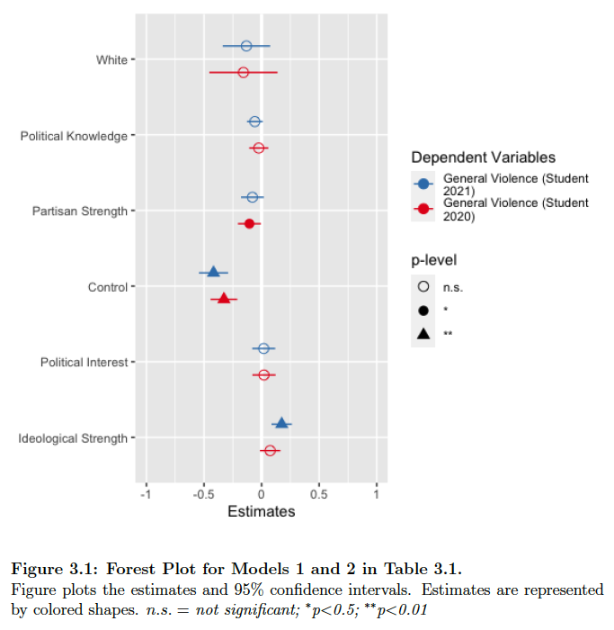
Modified measures for control and the least-liked measure for political violence.
Exploratory factor analysis (EFA) and item response theory (IRT) in R that compares the established general political violence measure to the new least-liked violence measure.
Standardized OLS regression models.
Findings & Implications
Perceived lack of control leads to support for political violence. Exploratory OLS regression results (Figure 3.1) indicate that an increased feeling of control among respondents is the strongest predictor of reducing support for general political violence, even when controlling for partisan and ideological strength.
The least-liked measure is a reliable survey measure and is composed of two distinct factors. The EFA table (below) indicates that all items of the least-liked and general violence measures load onto three separate factors (i.e., verbal, physical, and general violence factors). However, all items associated with the verbal and physical facets of the least-liked measure of violence provide more influence on the single factor than do the general violence items.
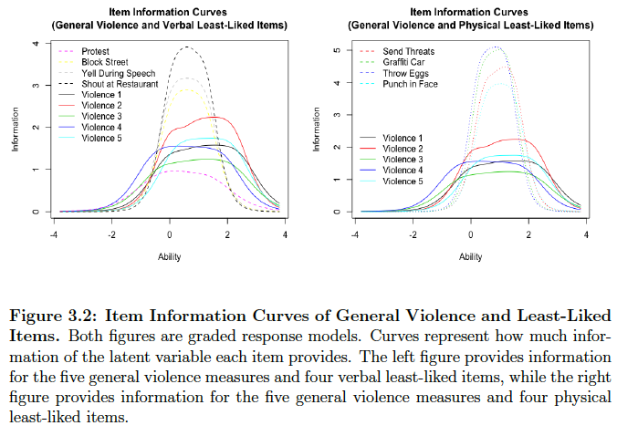
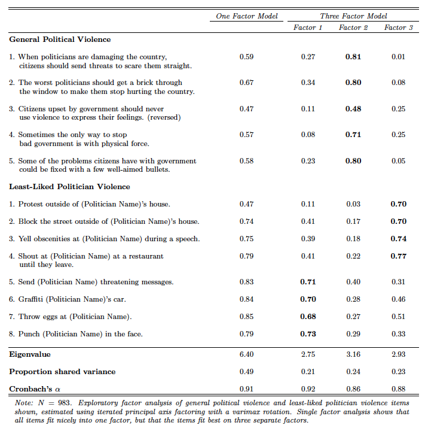
The least-liked measure provides more information about the latent violence construct than the general violence measure. The Item Information Curves (Figure 3.2) of the graded response model for variables with multiple response options indicate the items of the verbal and physical facets of the least-liked measure provide more information about the latent violence trait than do the general violence measures typically used in research investigating support for political violence.
Despite the measurement improvement, perceptions of control remain strong predictors fo sentimeents of political violence. Further standardized OLS investigations indicate that when analyzing the relationship between feelings of control and support for political violence, higher feelings of control continue to reduce sentiments of political violence across every measure used (Figure 3.4). Despite the improvements made with the least-liked measure, people will gravitate towards supporting political violence when they feel they lack control over making decisions in their lives.
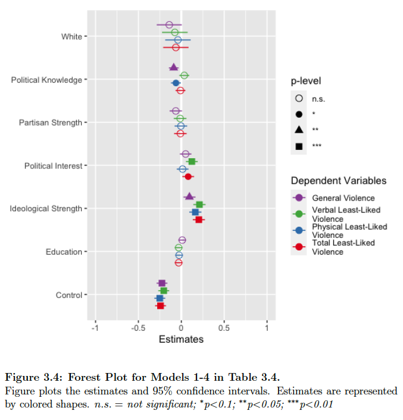
What underlying factors lead to populist support among democrats and republicans?
Background
Many leading political world powers have undergone, or are still in the process of subscribing to, a populist reformation. With the party platforms of Donald Trump and Bernie Sanders, the United States has not been immune to this global trend. Populism is an ideology that considers society as two separate antagonistic groups: the pure people versus the corrupt elite. Populists, then, strive to appeal to the public and their concerns. The premise of populism argues that politics should be an expression of the general will of the people.
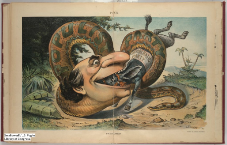
Despite populism’s goal of being of and for the will of the people, to be successful, populism needs a central figure to direct its messages. Due to an increase in economic and social grievances, populism has gained significant momentum within the last decade. Since its central messages revolve around anti-elitist and people’s centrism, populism poses a significant risk to democratic norms and principles, as democracies, like the U.S., retain the necessity of governance by representation. To prevent the spread of populism, it is important to investigate why people feel it is the solution to their problems.
Challenge
Recent literature on populism in the U.S. almost exclusively focuses on anti-Washington D.C. and anti-immigrant right wing populism of Donald Trump, which stems from increasing threats to perceived social status. Despite different sources of discontent and threats, there is a strong interest among liberals for populist policies, which is apparent in the rhetoric of and support for Bernie Sanders.
Perceptions of lacking control over making decisions in life develop from social and economic discontent thought to be caused by the current political establishment. In other words, threats to levels of perceived control stem from events experienced by the individual in the world they live in, that an individual has little personal control over. Most interestingly, the sentiments around lacking control over life decisions are shared by liberals and conservatives.
Populist sentiments can be seen in everyday occurences, such as the COVID-19 pandemic. Considering an individual cannot change the trajectory of the pandemic on their own, they ultimately feel they have no control over basic human functions that are obtained when earning a living. To regain a sense of control, these individuals will seek out alternative ways to regain a sense of control along with others who also feel this way. Since some populists discuss ways regain control over the pandemic in alternative ways (e.g., retaining personal freedom by not wearing masks), those low in control will support these populist politics because it makes them feel they have regained control over their lives, regardless of whether it actually does or not.
Methods
I tested this theory with:
* Developed new, adapted existing, and compiled latent measures of perceptions of control and populism.
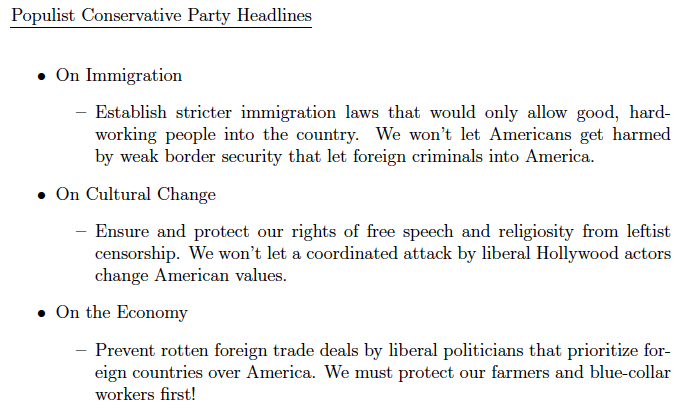
* I manipulated the level of populist rhetoric used in a fictional political party’s policy platforms to gauge how this changes how people at varying levels of control feel about the party.
* 2 x 2 design, where self-identified democrats and republicans received either a populist or neutral policy platform of a fictional political party.
(The populist conservative condition is on the right.)
Findings & Implications
Through OLS regressions, I found that lacking control sometimes increased overall support for populism, while other times it decreased perceptions of control on the observational study. This tells us that lacking control is not a strong predictor of populist support.
Populist rhetoric had little influence on how favorable republicans or democrats felt about the party compared to those who received the neutral version of the party, at all levels of control. This demonstrates that when political parties use populist rhetoric, it does not effect how favorable these parties are.
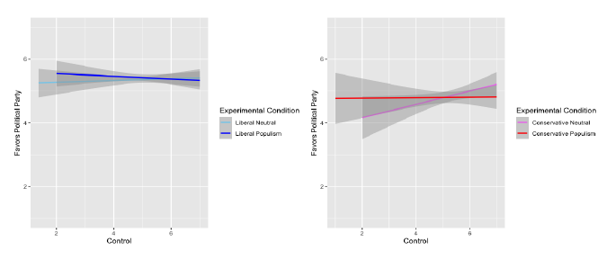
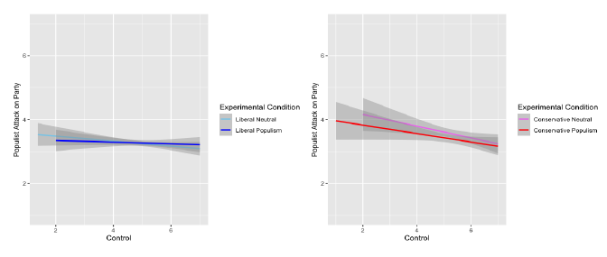
What motivates people to believe in conspiracy theories?
Background
Conspiracy theories pose a fundamental threat to democratic norms in the United States. Conspiracy theories are proposed explanations of events that fixates blames a small group of people acting in secret for their own benefit against a common goal that fails to meet an agreed upon standard of evidence. Research within the last ten years around conspiracy theories demonstrates that:
Half of the American public endorses at least one conspiracy theory.
30% of Americans believe that the 2020 presidential election was fraudulent.
More than 20% of Americans believe COVID-19 was intentionally developed in a lab.
These beliefs have negatively impacted the American public’s trust toward elections and the healthcare system, which directly result in lower vaccination rates and violent movements at federal government buildings.
People believe in conspiracy theories as a way of satisfying particular needs. While some endorse conspiracy theories as a way of understanding the world they live in, people who feel a lack of control in their lives endorse conspiracy theories as a way of placing blame on people or groups they feel are responsible for threats to their well-being. To help curb the endorsement of misinformation and conspiracy theories, it is essential to identify why people subscribe to them in the first place.
Challenge
Scholars have established that that lacking control is a consistent predictor of conspiracy theory beliefs; however, the empirical findings reported are more mixed. I wanted to understand why. I surveyed the conspiracy theory research and analyzed the methods used. Ultimately, I found two measurement inconsistencies among 13 academic articles that investigated the relationship between control and conspiracy theories.
1. One subset of the literature measures control as it relates to control over the events in one’s life.
2. A second subset measures control as having influence over others in their social environment.
3. The final subset measures control as political efficacy, or the perception one has over their ability to wield political influence. These distinct concepts may contribute to these mixed results.
1. One subset of the literature measures the belief in particular conspiracy theories, such as those dealing with the 9/11 attacks, or the 2020 presidential election.
2. Another subset measures an overall tendency to engage in conspiracist ideation (i.e., the general tendency to explain why events occur with conspiracy theories).
My challenge: Identify consistencies within one measure of control over another related to conspiracy theory beliefs.
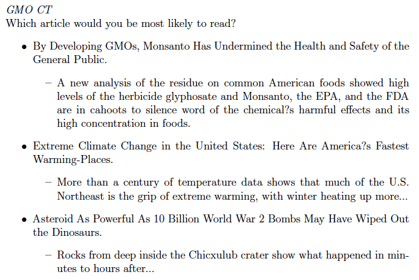
Methods
* Recruited 670-1,100 participants across four samples.
* Measured underlying feelings of control, power, and political efficacy.
* Utilized novel survey measure for conspiracy theory belief.
(An example of how news headlines were presented to respondents can be seen on the right)
Findings & Implications
Using Poisson, negative binomial, and fixed effects analyses in the exploratory cross-sectional survey, I found that:
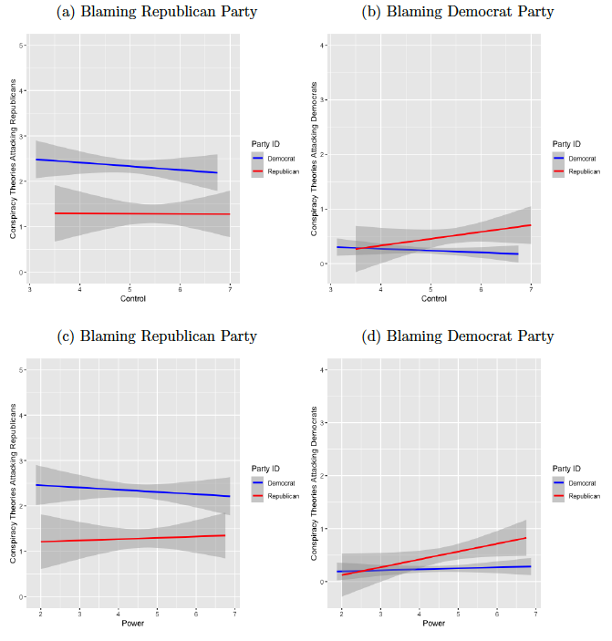
Control is positive. Feeling in control over decisions in one’s life has a consistently positive effect on reducing conspiratorial ideation, but less so on the number of specific conspiracy theories endorsed.
Having power over others reduces conspiracy theory beliefs. Having power over others reduced conspiracy ideation at times and the number of specific conspiracy theories endorsed, but is less consistent across models and samples.
Political efficacy decreases conspiritorial beliefs. Political efficacy is the strongest predictor of decreasing conspiracy theory beliefs in all instances.
Party affiliation matters. Democrats endorse more conspiracy theories that blame members of, or the entirety of the Republican party, while Republicans endorse more conspiracy theories that place blame on members of, or the entirety of the Democratic Party, conditional on the level of control and power they feel they have (four figures on the right).
Conspiracy theories, control, and the media. The level of conspiratorial rhetoric in news headlines has no influence on whether individuals will be more interested in reading that headline, at any level of control (bottom figure).
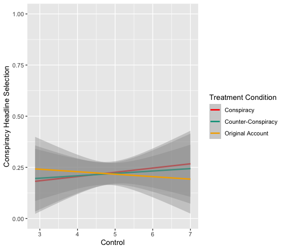